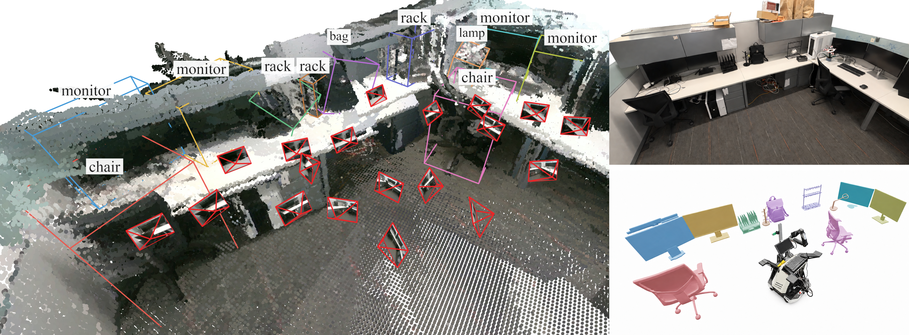
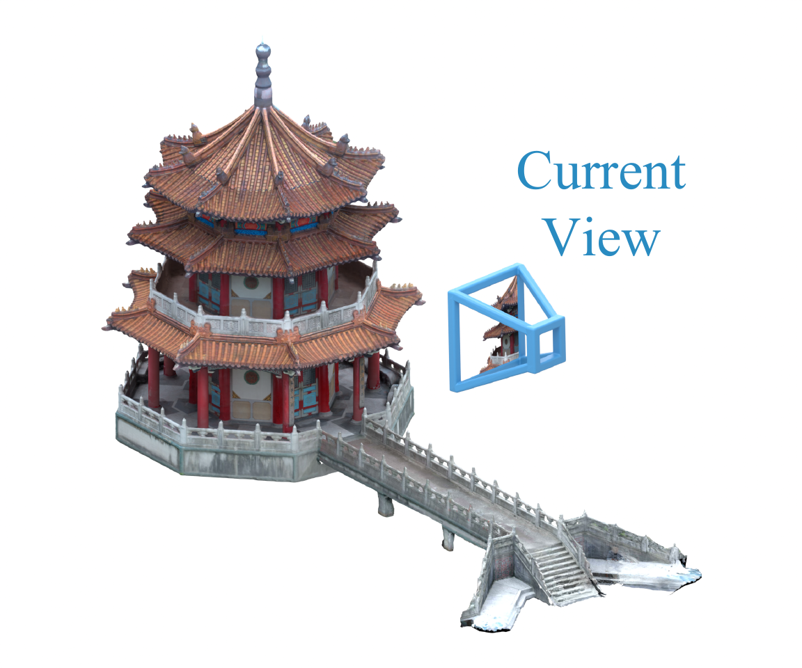
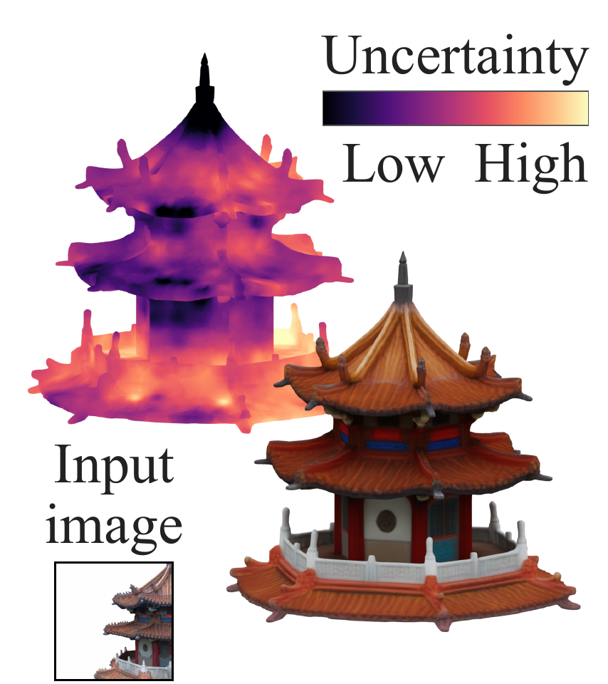
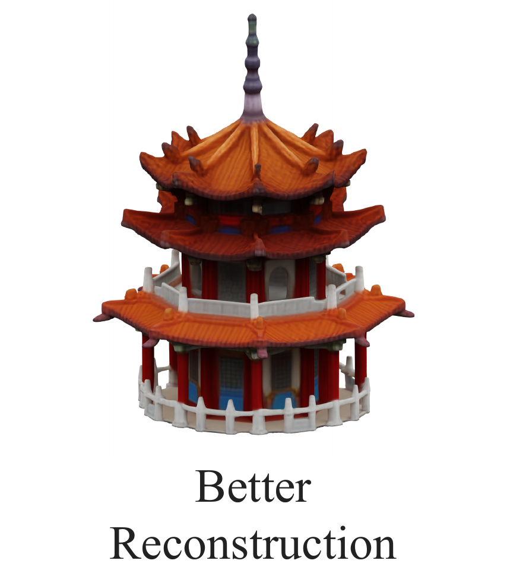
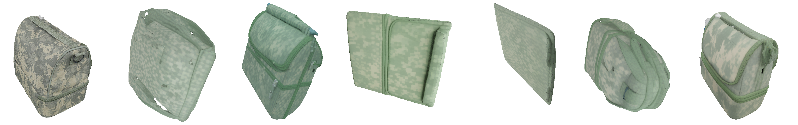
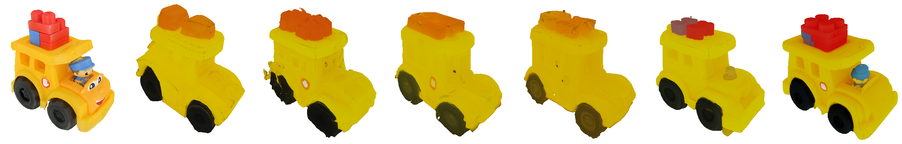
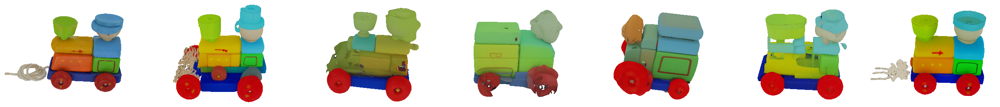
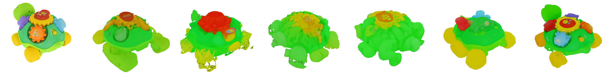
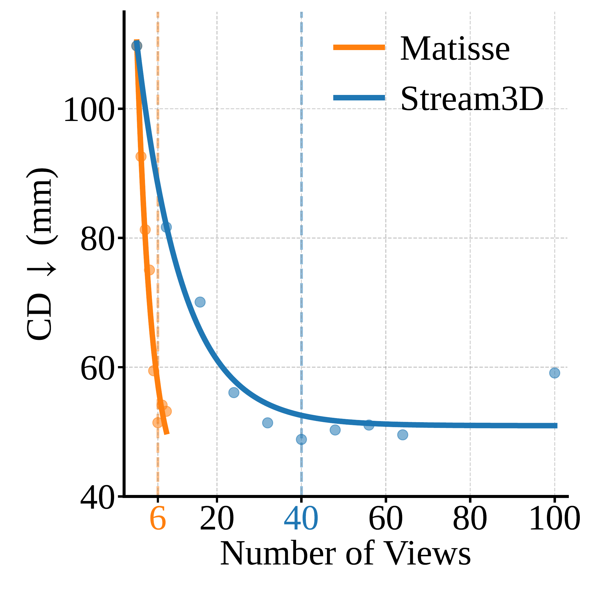

Reason beyond observed surfaces
Generative tokens represent visible and completed geometry, extending uncertainty into unseen regions.
Preprint · 2026
A unified, training-free framework for active view acquisition and keyframe selection.

How can a 3D reconstruction system acquire and retain useful information to understand a scene from partial views under a limited computation budget? Existing active-view methods typically estimate uncertainty only over observed geometry, while long-horizon methods often retain redundant observations.
We introduce Matisse, a training-free framework that unifies active reconstruction and keyframe selection using evidence from a pretrained generative 3D model. Matisse estimates Evidential Uncertainty from cross-attention evidence and derives Evidential Information Gain to choose views according to their expected reduction in posterior entropy.
Generative tokens represent visible and completed geometry, extending uncertainty into unseen regions.
The same information gain selects the next camera and useful frames from long sequences.
Candidate views are scored in evidence space at an amortized 1.26 ms per candidate.
Method at a glance
Matisse interprets view-to-token association weights probabilistically. Evidence at each aligned 3D token gives its posterior uncertainty; candidate cameras are ranked by how much uncertainty they are expected to remove.

A generative model hypothesizes visible and occluded shape.

Weakly supported 3D tokens remain uncertain.
Visible uncertainty and exploration rank cameras.

New evidence updates shape and retained keyframes.
Uncertainty falls as accumulated evidence grows for token q.
A view is informative when it sees many uncertain tokens.
Experiments
We evaluate sparse-view reconstruction on GSO30, YCB-V, and Replica: single objects, cluttered tabletops, and room-scale environments.
Matisse reconstructs geometry and appearance more faithfully than active-reconstruction baselines.




Quantitative evaluation
Compact comparison using the Stream3D reconstruction backend.
| Method | CD ↓ | IoU ↑ | P-FID ↓ | Runtime ↓ |
|---|---|---|---|---|
| Random | 62.078 | 0.736 | 48.456 | 16.37 s |
| FisherRF | 65.866 | 0.716 | 53.443 | 55.57 s |
| GauSS-MI | 88.676 | 0.686 | 64.831 | 53.88 s |
| GAVIS | 87.598 | 0.687 | 64.394 | 95.68 s |
| MAGICIAN | 63.666 | 0.733 | 50.175 | 23.97 s |
| Matisse-G Ours | 54.167 | 0.765 | 45.354 | 16.02 s |
Keyframe selection
Matisse selects 7 informative keyframes and reaches the quality Stream3D obtains after processing 48 sequential views.

Citation